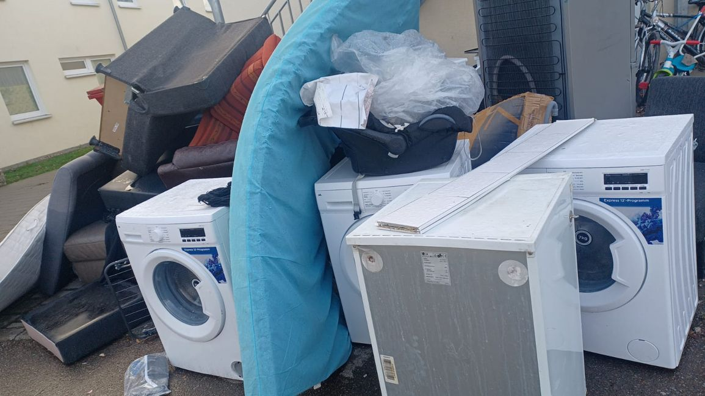

Das „virtuelle Warenhaus“: Sachen suchen und....finden
Du brauchst verschiedene Sachen....
Das ist sehr schön! Genau deswegen haben wir dieses „virtuelle Warenhaus“ eingerichtet.
Zuerst aber noch ein sehr wichtiger Hinweis:
Leider sieht es im Asylheim manchmal so aus:

Wir wissen nicht genau, wie diese Müllberge entstehen.
Möglicherweise hat es nachvollziehbare Gründe. Vielleicht bringen auch Leute von außerhalb ihren Müll hierher. Aber wenn die Müllberge einmal da sind, dann werden sie auf geheimnisvolle Weise immer größer.
Besonders nachts, wenn es niemand sieht.

NUR - ehrlich gesagt - motiviert uns das nicht besonders, wenn wir manchmal die Sachen, die wir mit einigem Aufwand zu Euch gebracht haben, dann hier auf dieser „privaten Müllhalde“ wiederfinden.
Aber das ist nicht alles. Es macht auch wirklich eine schlechte Stimmung in der Bevölkerung von Winnenden. Und das ist dann irgendwann für uns alle sehr negativ.
Auch der Hausmeister, der dann alles wegräumen muß, ärgert sich. Und das ist auch verständlich.
Und dann möchte er nicht mehr, dass wir Möbel zu Euch bringen.
Deswegen können wir Euch eigentlich nur dann Möbel und andere Sachen bringen, wenn ihr uns ehrlich versichert, dass ihr die alten Möbel nicht einfach rausstellt, wenn sie Euch nicht mehr gefallen.
Daher bitte die folgenden Punkte UNBEDINGT beachten:
-
Bitte IMMER zuerst bei
anderen Bewohnern nach einer Verwendung im
Asylheim fragen.
Oft benötigt auch jemand anderes die Sachen.
Aber NICHT einfach rausstellen und darauf hoffen, dass es dann jemand anderes nimmt.
Der Regen macht dann oft alles schnell kaputt und dann möchte es niemand mehr!
-
Ihr könnt auch uns fragen! Wir können die Möbel
eventuell auch für jemanden brauchen, der nicht im Asylheim wohnt.
Aber wir freuen uns sehr, wenn die Möbel zuerst im Asylheim selbst
gebraucht werden.
-
Manchmal kann man die Sachen auch reparieren.
In diesem Punkt haben wir auch schon eine gewisse Erfahrung.
Wir unterstützen euch dabei gerne!
-
Sprecht auch mit dem
Hausmeister, BEVOR ihr die Sachen rausstellt,
und holt Euch ZUERST sein „OK“.
-
Schickt uns eine E-Mail, wenn du Sachen nicht mehr brauchst:
Warenhaus-anfrage@freundeleuwi.org
Nur wenn wir hier alle wirklich zusammenhelfen, können wir weiter Möbel für Euch bringen.
Nur wenn wir alle zusammenhelfen, können wir es vielleicht schaffen, dass sich solche Bilder - wie oben - NICHT wiederholen.
Wenn du Möbel von uns anfragst, dann stimmst Du diesen Regeln zu!
Vielleicht ist hier schon etwas für Dich dabei?
Wenn uns Freunde und Bekannte Sachen anbieten, manchmal sogar ganze Wohnungseinrichtungen, dann machen wir Bilder und ihr könnt die Bilder ansehen.
Macht einfach von den Sachen, die ihr brauchen könnt, einen Screenshot und schickt uns eine E-Mail an folgende Adresse:
Warenhaus-anfrage@freundeleuwi.org
Dann prüfen wir, ob die Sachen noch da sind - meistens ist das der Fall - und versuchen den Transport zu organisieren.
Schreibe deswegen in der E-Mail unbedingt auch:
- deinen Namen und deine Adresse
- deinen WhatsApp-Kontakt oder Signal-Kontakt
Die Angebote werden laufend angepasst. Ihr könnt also immer wieder vorbeisehen.
Angebote aus verschiedenen Wohnungen (Winnenden und Umgebung)
Falls du hier doch nichts gefunden hast, dann kannst du jetzt die Sachen, die du brauchst, hier eintragen:
Manchmal bekommen wir so viele Anfragen und Bitten, dass es schwierig wird, sich dies alles zu merken.
Deswegen haben wir ein Formular entworfen. Da werden die Anfragen und Wünsche gesammelt und wir können immer nachsehen, wer von Euch gerade etwas braucht.
Manchmal können wir Eure Wünsche ganz schnell erfüllen, manchmal dauert es leider auch etwas länger.
Daher bitten wir Euch um Geduld.
Das erste Formular ist in vier Sprachen geschrieben.
Nachdem ihr eure Kontaktdaten eingegeben habt, gibt es 5 Möglichkeiten, das einzutragen, was ihr benötigt.
Bitte immer bei jeder Frage NUR einen Wunsch eintragen. Sonst haben wir später Schwierigkeiten, das zu verarbeiten.
Ihr müsst keine Angst haben. Wenn etwas nicht klappen sollte, dann könnt ihr es ohne Problem nochmal versuchen.
Formular in Deutsch, Englisch, Französisch und Russisch
Hier kann man sich mit diesen Sprachen eintragen:
- Deutsch
- Englisch
- Französisch (Français)
- Russisch (Русский)
ACHTUNG - SEHR WICHTIG!
Bitte übersetzt alle eure Wünsche in die deutsche Sprache , bevor ihr etwas eintragt. Benützt dazu eine Übersetzungs-App. Wir haben sonst große Schwierigkeiten, eure Eintragungen zu verstehen und können sie nicht richtig bearbeiten.
Formular in Türkisch, Arabisch und Dari/Farsi
Hier kann man sich mit diesen weiteren Sprachen eintragen:
- Türkisch (Türkçe)
- Arabisch (عربي)
- Dari/Farsi (فارسی، دری)
Zum Formular TRK-ARAB-DARI-FARSI
ACHTUNG - SEHR WICHTIG!
Bitte übersetzt alle eure Wünsche in die deutsche Sprache , bevor ihr etwas eintragt. Benützt dazu eine Übersetzungs-App. Wir haben sonst große Schwierigkeiten, eure Eintragungen zu verstehen und können sie nicht richtig bearbeiten.
Bitte habe Verständnis, wenn nicht alles ganz schnell und reibungslos klappt.
Wir alle arbeiten hier im Ehrenamt und oft sollte man an vielen Stellen gleichzeitig sein.
Aber wir versuchen – mit all unseren Schwächen und Unzulänglichkeiten – so gut es geht zu helfen.
Wer mitmachen möchte, ist herzlich willkommen.
Datenschutz: Wir gehen mit deinen Daten vertrauensvoll um. Deine Adresse wird nicht öffentlich im Internet sichtbar sein. Mit deiner Anfrage stimmst du automatisch der Speicherung deiner Daten zu. Wenn du uns später aufforderst, deine Daten wieder zu löschen, so werden wir das selbstverständlich tun. Wir geben deine Daten nur in dem Rahmen weiter, der für die Organisation der Warenvermittlung und wegen des Transportes notwendig ist.